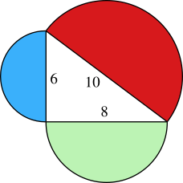
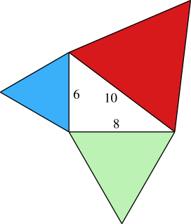
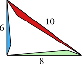
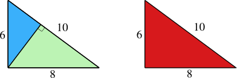
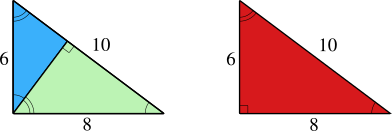
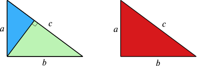

In the following figure, the red, blue and green regions are all semicircles. How are their areas related?

One way of answering this question is to work out the areas of the three semicircles. The blue one has radius 3, so has area 12πr2=12π×32=92π. The green one has radius 4, so area 12π×42=8π, and the red one has radius 5, so area 12π×52=252π.
A small calculation shows that 92π+8π=252π, so the sum of the blue and green areas equals the red area.
In general, if we replace the side lengths by a and b for the two shorter sides, and by c for the hypotenuse, we can start by working out the area of the blue semicircle. Its diameter is a, so its radius is a/2 and the area is 12π(a2)2=18πa2. Likewise, the green semicircle has area 18πb2 and the red semicircle has area 18πc2. Then using Pythagoras’s Theorem, we know that c2=a2+b2, so
18πc2=18π(a2+b2)=18πa2+18πb2.
In other words, the blue and green areas sum to the red area.
In the following figure, the red, blue and green regions are all equilateral triangles. How are their areas related?

We could do the same as in question 1, and work out the areas of the equilateral triangles. This does seem to be somewhat harder, though. If an equilateral triangle has side length 2x, we can use this diagram to work out its height:
We’ve drawn in the perpendicular height, which meets the base at its midpoint. So the left half of the triangle has hypotenuse 2x and one side x; the third side is therefore given by Pythagoras’s theorem as
In our situation, the blue triangle has 2x=6, so x=3 and the area is 323⎯⎯√=93⎯⎯√; the green triangle has 2x=8, so x=4 and the area is 423⎯⎯√=163⎯⎯√; the red triangle has 2x=10, so x=5 and the area is 523⎯⎯√=253⎯⎯√.
Thus in this case, too, the red area is the sum of the blue and green areas.
A pattern seems to be beginning to emerge here…
There is another approach, which will be explained in the answer to the next question.
In the following figure, the red, blue and green regions are all similar triangles. How are their areas related?

This time, we cannot work out the actual areas, as we are not given enough information to do so. So we make use of the idea of length and area scale factors. If two shapes are similar, there will be a length scale factor relating them. One key result is the following, which you may well recall:
If the length scale factor is k, then the area scale factor is k2.
The easiest thing to do is to imagine a white triangle similar to the blue, green and red shapes with a base length of 1 and an area of A, as shown in the following figure:
Then the blue triangle has a base length 6 times larger, so the length scale factor is 6. Since the length scale factor is 6, the area scale factor is 62=36, so the blue triangle has area 36A.
Likewise, the green triangle has a base length of 8, giving a length scale factor of 8. Thus the area scale factor is 82=64 and the area of the green triangle is 64A.
From the white to the red triangle, we have a length scale factor of 10, so an area scale factor of 102=100, giving the red triangle an area of 100A.
Then the area of the red triangle equals the sum of the areas of the blue and green triangles: 100A=36A+64A.
The language of scale factors can get a bit tedious after a while. Another way to express the same idea a little more compactly is to say that for similar shapes, their area is proportional to the square of their side length (or diameter, or some other length measurement).
Then the blue triangle has area 36k for some k, the green triangle has area 64k for the same k, and the red triangle has area 100k for the same k; in this way, we don’t need to explicitly mention the white triangle.
In fact, nothing in this argument assumed that the coloured shapes were triangles. They could have been any three similar shapes and exactly the same would have been true.
The argument would also be true if the side lengths of the triangle were a, b and c instead of 6, 8 and 10. In that case, the length scale factor from the white shape to the blue shape would be a (assuming that the white shape still had a base of 1), and so the area scale factor would be a2, giving an area of a2A. Likewise, the green shape would have area b2A and the red shape would have area c2A. Then, by Pythagoras’s Theorem, as c2=a2+b2, we find that c2A=a2A+b2A, and the area of the red shape equals the sum of the blue and green areas.
In the left figure below, the blue and green regions have been formed by dropping a perpendicular as shown. How are their areas related to the red area in the right figure?

How does this result help to prove Pythagoras’s Theorem?
It is very clear that the blue and green areas add up to the red area, because they form exactly the same shape.
What may well be less obvious at first sight is that the three triangles are all similar. Can you prove this?
The three triangles are all right-angled, and their other two angles are the same in each triangle, as shown in this diagram.

Again, this result would be true for any side lengths a, b and c; we have made no use of the actual side lengths in our reasoning so far:

We can now work “backwards” using the ideas of the previous questions to prove Pythagoras’s Theorem: the areas of the similar triangles are proportional to the squares of their bases, so the blue triangle has area a2k for some k, the green triangle has area b2k and the red triangle has area c2k. Adding the blue and green to get the red gives
a2k+b2k=c2k
and dividing through by k gives
a2+b2=c2.
Here’s another way to think about this. Since the areas of the blue and green similar triangles add to give the red similar triangle, the same will be the case if we replace the similar triangles with any other similar shapes, as in the earlier questions in this resource. And if the shape is a square, we immediately get a2+b2=c2.
This is the quintessential proof: with just a single perpendicular line, we have created three similar triangles and discovered that Pythagoras’s Theorem must be true. Furthermore, the theorem is true not just for squares, but for any similar shapes on the three sides of the right-angled triangle.
For some historical background on this argument, see the “Historical background” section.